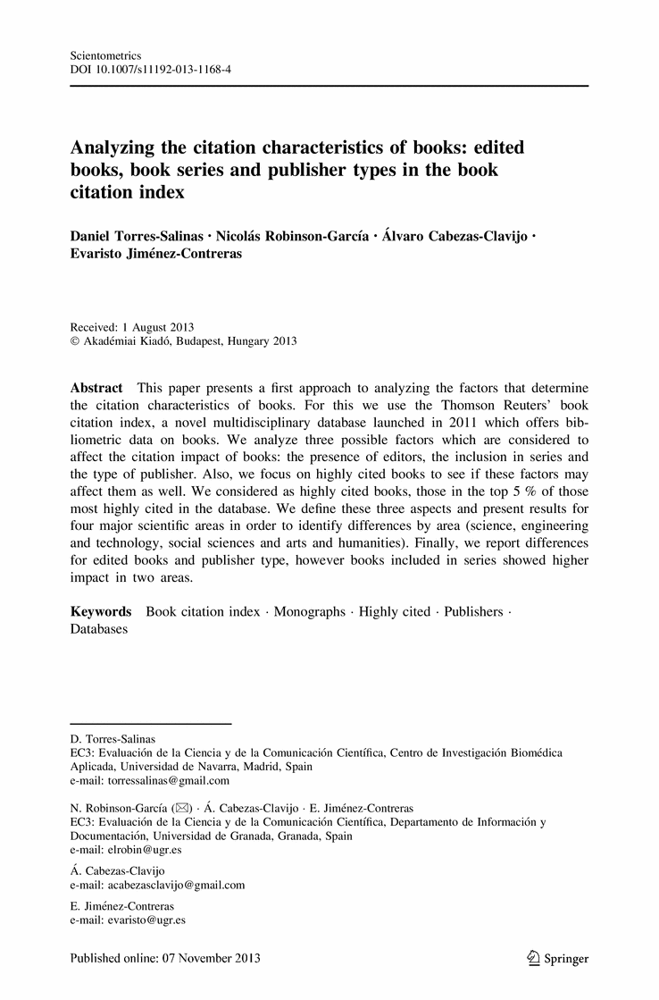
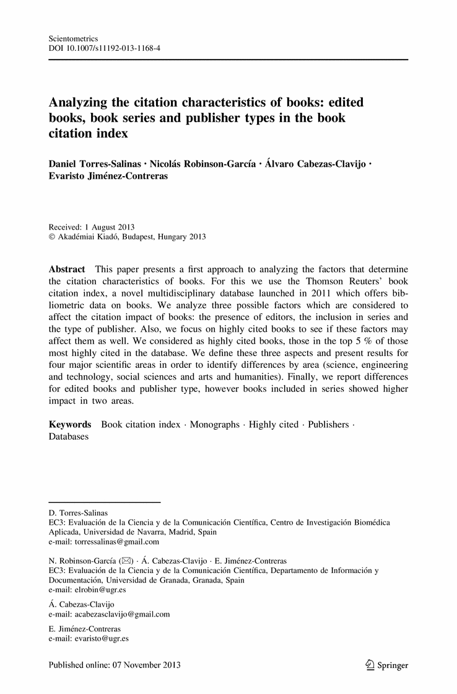

Analyzing the citation characteristics of books: edited books, book series and publisher types in the book citation index
- Daniel Torres-Salinas,
- Nicolás Robinson-García,
- Álvaro Cabezas-Clavijo,
- Evaristo Jiménez-Contreras
- … show all 4 hide
Abstract
This paper presents a first approach to analyzing the factors that determine the citation characteristics of books. For this we use the Thomson Reuters’ book citation index, a novel multidisciplinary database launched in 2011 which offers bibliometric data on books. We analyze three possible factors which are considered to affect the citation impact of books: the presence of editors, the inclusion in series and the type of publisher. Also, we focus on highly cited books to see if these factors may affect them as well. We considered as highly cited books, those in the top 5 % of those most highly cited in the database. We define these three aspects and present results for four major scientific areas in order to identify differences by area (science, engineering and technology, social sciences and arts and humanities). Finally, we report differences for edited books and publisher type, however books included in series showed higher impact in two areas.

 
Look

Look
Inside

Within this Article
- Aksnes, D. W. (2003). Characteristics of highly cited papers. Research Evaluation, 12(3), 159–170. CrossRef
- Archambault, E., & Larivière, V. (2009). History of the journal impact factor: Contingencies and consequences. Scientometrics, 79(3), 639–653. CrossRef
- Bar-Ilan, J. (2008). Informetrics at the beginning of the 21st century —A review. Journal of Informetrics, 2(1), 1–52. CrossRef
- Campanario, J. M., Carretero, J., Marangon, V., Molina, A., & Ros, G. (2011). Effect of the journal impact factor of the number and document type of citing records: a wide-scale study. Scientometrics, 87(1), 75–84. CrossRef
- Cohen, J. (1988). Statistical power analysis for the behavioral sciences. Hillsdale,NJ: Erlbaum.
- Cronin, B., Snyder, H., & Atkins, H. (1997). Comparative citation rankings of authors in monographic and journal literature: A study of sociology. Journal of Documentation, 53(3), 263–273. CrossRef
- Garfield, E. (2009). Five decades of citation indexing. International Workshop for Scientometrics. Beijing, China. Retrieved May 30, 2013, from http://garfield.library.upenn.edu/papers/beijingchina2009.html.
- Georgas, H., & Cullars, J. (2005). A citation study of the characteristics of the Linguistics Literature. College & Research Libraries, 66(6), 496–516.
- Gorraiz, J., Purnell, P., & Glänzel, W. (2013). Opportunities and limitations of the book citation index. Journal of the American Society for Information Science and Technology, 64(7), 1388–1398. CrossRef
- Hammarfelt, B. (2011). Interdisciplinarity and the intellectual base of literature studies: Citation analysis of highly cited monographs. Scientometrics, 86(3), 705–725. CrossRef
- Hicks, D. (2004). The four literatures of social science. In H. F. Moed, W. Glänzel, & U. Schmoch (Eds.), Handbook of quantitative science and technology research: The use of publication and patent statistics in studies of S&T systems (pp. 473–496). Netherlands: Kluwer Academic Publishers.
- Kousha, K., Thelwall, M., & Rezaie, S. (2011). Assessing the citation impact of books: The role of Google books, Google scholar, and Scopus. Journal of the American Society for Information Science and Technology, 62(11), 2147–2164. CrossRef
- Lambiotte, R., & Panzarasa, P. (2009). Communities, knowledge creation, and information diffusion. Journal of Informetrics, 3(3), 180–190. CrossRef
- Leydesdorff, L. (2009). How are new citation-based journal indicators adding to the bibliometric toolbox? Journal of the American Society for Information Science and Technology, 60(7), 1327–1336. CrossRef
- Leydesdorff, L., & Felt, U. (2012). Edited volumes, monographs and book chapters in the Book Citation Index. Journal of Scientometric Research, 1(1), 28–34. CrossRef
- Leydesdorff, L., & Rafols, I. (2009). A global map of science based on the ISI subject categories. Journal of the American Society for Information Science and Technology, 60(2), 348–362. CrossRef
- Linmans, A. J. M. (2010). Why with bibliometrics the humanities does not need to be the weakest link. Indicators for research evaluation based on citations, library findings and productivity measures. Scientometrics, 83(2), 337–354. CrossRef
- Moed, H. F. (2005). Citation analysis in research evaluation. Dordrecht: Springer.
- Peritz, B. C. (1981). Citation characteristics in library science: Some further results from a bibliometric survey. Library Research, 3(1), 47–65.
- Tang, R. (2008). Citation characteristics and intellectual acceptance of scholarly monographs. College & Research Libraries, 69(4), 356–369.
- Testa, J. (2010).The book selection process for the Book Citation Index in Web of Science. Retrieved June 3, 2013, from http://wokinfo.com/media/pdf/BKCI-SelectionEssay_web.pdf.
- Torres-Salinas, D., & Moed, H. F. (2009). Library catalog analysis as a tool in studies of social sciences and humanities: An exploratory study on published book titles in economics. Journal of Informetrics, 3(1), 9–26. CrossRef
- Torres-Salinas, D., Robinson-García, N., Jiménez-Contreras, E., & López-Cózar, D. (2012). Towards a ‘book publishers citation reports’. First approach using the ‘book citation index’. Revista Española de Documentación Científica, 35(4), 615–620. CrossRef
- Torres-Salinas, D., Rodríguez-Sánchez, R., Robinson-García, N., Fdez-Valdivia, J., & García, J. A. (2013a). Mapping citation patterns of book chapters in the book citation index. Journal of Informetrics, 7(2), 412–424. CrossRef
- Torres-Salinas, D., Robinson-García, N., Campanario, J. M. & Delgado López-Cózar, E. (2013b). Coverage, field specialization and impact of scientific publishers indexed in the ‘Book Citation Index’. Online Information Review, in press.
- White, H., Boell, S. K., Yu, H., Davis, M., Wilson, C. S., & Cole, F. T. H. (2009). Libcitations: A measure for comparative assessment of book publications in the humanities and social sciences. Journal of the American Society for Information Science and Technology, 60(6), 1083–1096. CrossRef
- Zuccala, A., & van Leeuwen, T. N. (2011). Book reviews in humanities research evaluations. Journal of the American Society for Information Science and Technology, 62(10), 1979–1991. CrossRef
- Title
- Analyzing the citation characteristics of books: edited books, book series and publisher types in the book citation index
- Journal
-
Scientometrics
- DOI
- 10.1007/s11192-013-1168-4
- Print ISSN
- 0138-9130
- Online ISSN
- 1588-2861
- Publisher
- Springer Netherlands
- Additional Links
- Topics
- Keywords
-
- Book citation index
- Monographs
- Highly cited
- Publishers
- Databases
- Industry Sectors
- Authors
- Author Affiliations
-
- 1. EC3: Evaluación de la Ciencia y de la Comunicación Científica, Centro de Investigación Biomédica Aplicada, Universidad de Navarra, Madrid, Spain
- 2. EC3: Evaluación de la Ciencia y de la Comunicación Científica, Departamento de Información y Documentación, Universidad de Granada, Granada, Spain